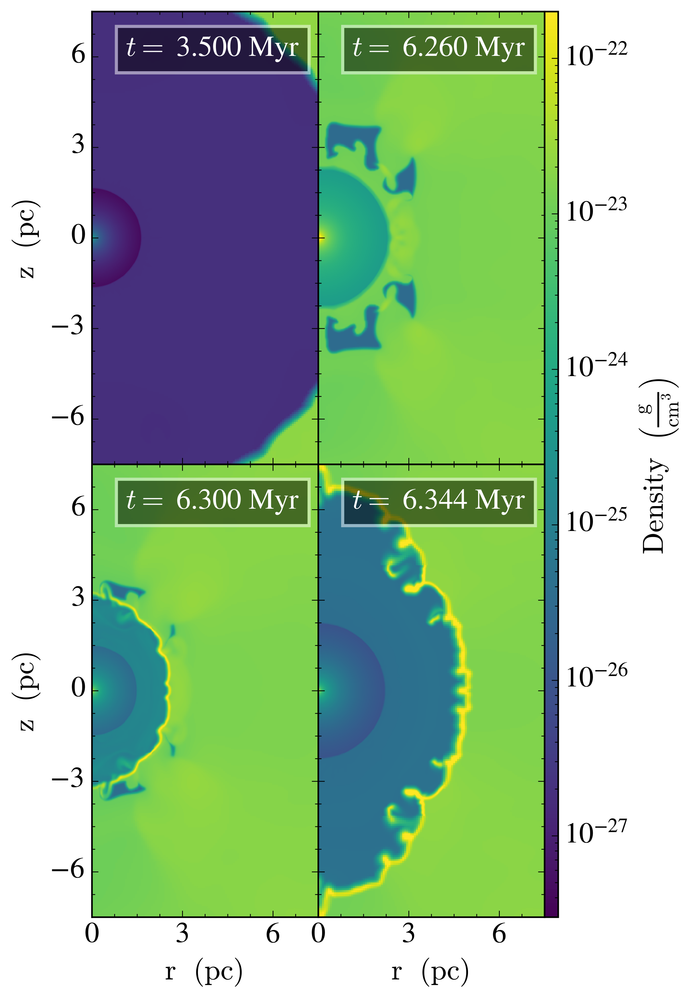

生成时间：2026-05-07T11:38:23+08:00
今日保留论文数：4
高能天体物理重点
1. Multi-Dimensional MHD simulations of young Core-Collapse Supernova Remnants
- 来源：arXiv / astro-ph.HE
- 链接：https://arxiv.org/abs/2605.04940v1
- 作者：C. J. K. Larkin, J. Mackey, B. Reville, H. Jin, N. Langer, A. A. C. Sander
- 评分：novelty 6/10，importance 7/10，relevance 9/10，final 8.40/10
- 推荐理由：多维MHD模拟核心坍缩超新星遗迹在结构化磁化星周介质中的早期演化，并明确讨论对PeV粒子加速能力的限制；对SNR非热辐射和宇宙线源建模高度相关。
中文题目：年轻核心坍缩超新星遗迹的多维磁流体模拟
做了什么：这篇文章用 PION 代码做了红超巨星和 Wolf-Rayet 星前身星的二维/三维磁流体模拟，把恒星演化给出的质量损失、光电离、辐射冷却和爆炸后的激波传播连在一起。核心问题是：年轻核心坍缩超新星遗迹的前几百年演化，究竟由简单的解析风泡结构决定，还是被真实星风、磁场和多维不稳定性显著改写。作者发现，红超巨星和 WR 情形的前向激波都比常用解析估计更快；原因分别与光电离导致的风加速、以及 WR 星周介质本身的膨胀有关。模拟还表明，慢转 RSG/WR 产生的风泡磁场偏弱，可能不利于这些年轻遗迹成为 PeV 宇宙线加速器。
为什么重要：核心坍缩超新星遗迹是高能粒子、非热辐射和星际介质反馈研究的关键对象，但它们早期演化严重依赖爆炸前几万到几十万年的星周介质。若 CSM 密度、速度和磁场结构估错，后续对激波速度、射电/X 射线亮度、宇宙线最高能量的解释都会系统偏移。本文的重要性在于，它不是把超新星放进一个理想化的 \(r^{-2}\) 星风里，而是从较自洽的前身星演化和多维 MHD 结构出发，检验常用解析模型在哪些地方失效。
理论 / 观测 / 仪器方法价值：对理论而言，论文给出了将恒星演化、星风泡、光电离、辐射冷却和超新星遗迹早期演化连接起来的数值框架；对观测而言，它提醒我们用年轻 SNR 的半径和速度反推爆炸能量或 CSM 密度时，需要考虑风泡膨胀和电离加热；对高能天体物理而言，弱磁化风泡结论直接影响 PeVatron 候选源评估；对方法而言，多维 MHD 处理揭示了风终止激波之外解析球对称模型难以捕捉的反射激波和动力学不稳定性。
为什么应该关注：如果你关心 Cas A、SN 1987A 一类年轻遗迹的动力学年龄、前身星质量损失史、非热辐射和宇宙线加速，这篇文章值得看。它指出，早期 SNR 不是只由爆炸能量和一个简单密度归一化决定；前身星晚期风、光电离和磁场拓扑会在几百年尺度内留下可观测痕迹。换句话说，用年轻遗迹倒推前身星时，CSM 的细节不是噪声，而可能就是主要信号。
展开详细解读：文章讲解、背景、理论、重点章节、图表与相关工作
文章详细讲解
科学问题：核心坍缩超新星爆炸发生在大质量恒星自己塑造的星周介质中。红超巨星阶段的慢而密风、WR 阶段的快而稀风、主序星风泡、光电离区、辐射冷却壳层和磁场共同决定超新星激波遇到的环境。传统年轻 SNR 模型常采用球对称、定常星风密度 \(\rho\propto r^{-2}\)，再叠加 Chevalier 型自相似解。但真实 CSM 可能有多重激波、壳层、接触间断、磁场缠绕和不稳定性。本文要问的是：详细恒星演化处理和多维 MHD 是否会显著改变爆炸后前几百年的激波传播，尤其是 RSG 与 WR 前身星之间的差别。
作者怎么做：作者使用 PION 代码进行二维和三维 MHD 模拟。前半部分从大质量恒星演化模型得到随时间变化的质量损失率、风速和辐射场，并构造爆炸前的磁化 CSM；随后在该环境中初始化核心坍缩超新星爆炸，跟踪前向激波、反向激波、接触间断和风终止激波附近的相互作用。模型包括辐射冷却，并假设星周气体充分光电离，这一点对 RSG 风的温度、声速和额外加速尤其重要。WR 模型则重点考察快速 WR 风扫过先前 RSG 风所形成的复杂风泡结构。
关键结果：在 RSG 情形中，光电离加热使星风获得额外加速，导致爆炸后前向激波速度高于单纯解析星风模型预期。在 WR 情形中，作者发现一组较相干的快速反射激波；同时，如果考虑 CSM 本身处于膨胀状态，SNR 前向激波速度也会比静态 CSM 解析估计更高。两类模型都显示，慢转 RSG 和 WR 的风泡磁化较弱，这会限制年轻 SNR 把粒子加速到 PeV 能段的能力。多维模拟还显示，在风终止激波之外，壳层和间断面上的动力学不稳定性不可忽略。
局限和下一步：摘要显示模型重点在慢转前身星和特定 RSG/WR 演化轨道，尚不能覆盖双星剥离、快速旋转、爆发式质量损失、强磁星风或非轴对称大尺度 CSM。论文似乎也未把非线性宇宙线反馈、粒子输运和同步/逆康普顿辐射合成作为完整模块耦合进去。因此下一步应是扩大前身星参数空间，加入双星相互作用和非热粒子模块，并与具体年轻 SNR 的多波段半径、速度、线宽和偏振观测做正向比较。
背景知识
研究对象是年轻核心坍缩超新星遗迹。核心坍缩超新星来自初始质量大于约 \(8M_\odot\) 的恒星，爆炸前经历主序、红超巨星、蓝超巨星或 Wolf-Rayet 等阶段。每个阶段的星风速度、质量损失率和电离辐射差异很大，因此爆炸并不是进入均匀星际介质，而是进入一个由前身星自己雕刻出来的多层星周介质。
历史上，SNR 动力学常用 Sedov-Taylor 解或 Chevalier 自相似解描述。前者适合均匀介质中的绝热爆炸，后者适合幂律超新星抛射物与幂律外部介质相互作用。对 RSG 风，人们常采用 \(\rho=\dot M/(4\pi r^2 v_w)\)。这个近似非常有用，但它把星风历史、光电离、风终止激波、冷却壳层和磁场结构都压缩成少数参数，可能低估真实 CSM 的复杂性。
现在值得重新看这个问题，是因为三方面条件同时成熟：恒星演化模型能给出更细的晚期质量损失史；多维 MHD 代码可以在较大动态范围内跟踪风泡与 SNR；观测上 Chandra、XMM-Newton、NuSTAR、ALMA、VLA 以及未来 CTA/SKA 对年轻 SNR 的速度、非热谱和形态提出了更高要求。尤其在 PeVatron 问题上，环境磁场和激波速度决定最高加速能量，不能再只用球对称密度模型粗略判断。
常见误区包括：把所有核心坍缩 SNR 都看作在 \(r^{-2}\) 风中自由膨胀；把风泡磁场强度当作可任意调节的背景参数；把高激波速度直接解释为高爆炸能而忽视 CSM 膨胀；以及认为二维结构已足以代表三维湍动和不稳定性。本文的价值正在于逐一暴露这些近似可能带来的偏差。
基础理论 / 方法脉络
核心物理图像是：超新星抛射物以几千到上万 km/s 撞入星周介质，形成前向激波、反向激波和二者之间的接触间断。前向激波加热并压缩 CSM，反向激波处理抛射物，接触间断附近容易发生 Rayleigh-Taylor 或 Richtmyer-Meshkov 不稳定性。若 CSM 不是静止的，激波相对上游介质的速度应使用 \(v_s-v_{\rm CSM}\)，这会影响马赫数、压缩比和温度。
关键量包括爆炸能 \(E_{\rm SN}\)、抛射物质量 \(M_{\rm ej}\)、外部密度 \(\rho_{\rm CSM}(r,t)\)、风速 \(v_w\)、质量损失率 \(\dot M\)、磁场 \(B\)、冷却函数 \(\Lambda(T)\) 和电离加热。RSG 慢风密度高、冷却强；WR 快风能在先前慢风中吹出热泡和壳层。光电离会把气体温度维持在 \(10^4\) K 量级，提高声速并改变慢风动力学。
MHD 模型假设气体满足质量、动量、能量和磁感应方程。理想 MHD 中磁场冻结在等离子体中，风的径向扩张会改变磁场分量比例：径向分量近似 \(B_r\propto r^{-2}\)，环向分量常近似 \(B_\phi\propto r^{-1}\)。若恒星转速较低，环向磁场不强，风泡磁化也弱，这正是本文对 PeV 加速能力给出保守结论的基础。
观测连接主要来自激波半径和速度、热 X 射线温度、射电/硬 X 射线同步辐射、壳层形态以及偏振磁场结构。需要注意的退化包括：更高爆炸能、更低 CSM 密度、外部介质向外运动都可导致更大半径；更强磁场和更高电子加速效率都可提高同步辐射亮度；冷却壳层的投影形态也可能被误认为爆炸本身非球对称。
公式与推导
定常球对称星风的基准密度为
其中 \(\dot M\) 是质量损失率，\(v_w\) 是风速，\(r\) 是距恒星半径。很多解析 SNR 模型从这个式子出发，但本文强调真实 \(\dot M(t)\)、\(v_w(t)\) 和电离加热会使 CSM 偏离简单 \(r^{-2}\)。
风泡尺度常由风机械 luminosity 决定：
若风注入到近似均匀介质，经典能量驱动泡半径满足近似标度
其中 \(\rho_0\) 是环境密度，\(t\) 是风作用时间。WR 快风进入 RSG 慢风时并不严格满足均匀介质假设，因此会产生终止激波、接触间断和反射激波。
年轻 SNR 在幂律抛射物 \(\rho_{\rm ej}\propto r^{-n}\) 与外部介质 \(\rho_{\rm CSM}\propto r^{-s}\) 中的自相似前向激波半径可写作
这里 \(m\) 是膨胀指数。若外部介质不是静止幂律，或者存在壳层与反射激波，观测到的 \(m\) 就不能直接代入该解析关系反推 \(n\) 或 \(s\)。
强激波后温度的基本估计为
其中 \(v_s\) 是激波速度，\(v_{\rm up}\) 是上游 CSM 速度，\(\mu m_p\) 是平均粒子质量。本文 WR 情形中考虑 CSM 膨胀，等价于改变相对激波速度，因此会影响温度、马赫数和辐射诊断。
粒子加速最高能量常用 Bohm 极限量级估计：
其中 \(Z\) 是电荷数，\(B\) 是有效磁场，\(R_s\) 是激波尺度，\(c\) 是光速。若慢转 RSG/WR 风泡磁场偏弱，即使 \(v_s\) 较高，也难以自然达到 PeV 能段，除非存在额外磁场放大或特殊前身星条件。
模型拟合 / 应用方法
这类工作本身主要是正向数值模拟，而不是传统意义上对某个观测样本做后验拟合。核心参数来自恒星演化轨道和爆炸设置，包括 \(\dot M(t)\)、\(v_w(t)\)、电离光度、初始磁场、爆炸能、抛射物质量与密度剖面。模型输出是半径-时间关系、激波速度、密度/温度/磁场三维结构、壳层位置和不稳定性形态。若用于拟合观测，常见似然可围绕观测半径、膨胀率、X 射线温度、发射量、射电谱指数和表面亮度分布构造。
参数退化很强。更低 CSM 密度、更高爆炸能、更快外流 CSM 都能增加激波半径；更强电子-离子非平衡会改变由 X 射线温度推断的速度；投影和非球对称会让局部亮弧被误作整体壳层半径。磁场方面，初始风磁场、湍流放大和宇宙线流不稳定可能在观测同步辐射中混合，不能仅凭亮度反推前身星磁化。
实际应用时应把模拟当作物理先验生成器：先用恒星演化限制 CSM 家族，再用 SNR 半径、速度和谱诊断筛选模型，而不是直接把解析 \(r^{-2}\) 风密度拟合到数据。残差应重点看随方位角的系统偏差、激波速度随半径的偏差、冷却壳层位置是否错开，以及非热辐射所需磁场是否远高于 MHD 风泡自然给出的值。
重点章节 / 结果段落怎么读
-
数据/模型输入：应先读作者如何从恒星演化模型提取 RSG 和 WR 阶段的质量损失率、风速和辐射场。这决定了 CSM 的可信度，也决定结论是否只适用于某类慢转单星。
-
数值方法：重点看 PION 的 MHD 方程、网格维度、边界条件、辐射冷却和光电离处理。特别要看二维到三维的过渡，因为壳层破碎和磁场拉伸在二维中可能被人工约束。
-
爆炸前 CSM 结构：这一部分应检查风终止激波、冷却壳层、磁场强度和速度场。本文许多后续差异不是爆炸阶段产生的，而是爆炸前环境已经不同。
-
SNR 激波传播结果：重点读 RSG 和 WR 中前向激波速度为何超过解析模型。应区分光电离加速、CSM 膨胀、反射激波和多维不稳定性的贡献。
-
讨论与高能意义：看作者如何从弱磁化风泡推论 PeV 加速受限，以及他们是否考虑磁场放大、快速旋转或双星通道等例外情况。
-
稳健性/附录：若有分辨率测试、二维/三维比较、冷却或电离开关实验，应优先阅读。这些测试决定新结构是否为物理结果而非数值伪影。
建议重点查看的图表
-
恒星演化给出的 \(\dot M(t)\)、\(v_w(t)\) 和电离光度历史：看 RSG/WR 阶段突变发生在何时，是否与最终 CSM 壳层位置对应。
-
爆炸前 CSM 的径向密度、速度、温度和磁场剖面：检查是否偏离 \(r^{-2}\)，风终止激波和冷却壳层是否清晰。
-
二维/三维密度切片或体渲染：看壳层破碎、反射激波和接触间断不稳定性，尤其比较 RSG 与 WR 模型。
-
前向激波半径和速度随时间曲线：应与解析模型或自相似标度比较，关注偏差出现的时间和幅度。
-
磁场强度分布与等离子体 \(\beta\)：判断弱磁化结论是否只在大体积成立，还是激波附近也成立。
-
分辨率或维度收敛图：看关键激波速度、壳层位置和不稳定性增长是否随网格改变而稳定。
-
PeV 加速相关诊断：若有 \(E_{\max}\)、Alfvén 速度或磁化参数图，重点看是否存在局部高磁场区域可绕过平均弱磁化结论。
关键图表逐图导读
图 1：通常应是前身星风历史或恒星演化输入。横轴多为爆炸前时间，纵轴可能是质量损失率、风速或机械 luminosity。读图时不要只看最终时刻，要看历史积分，因为远处 CSM 记录的是较早阶段的风。
图 2：爆炸前 CSM 径向剖面。横轴为半径，纵轴为密度、温度、速度或磁场。模型线若与 \(r^{-2}\) 参考线分离，说明解析星风假设失效。读图陷阱是把局部尖峰视为数值噪声；冷却壳层和风终止激波本来就会产生窄结构。
图 3：二维或三维密度/温度切片。颜色表示流体量，线条可能表示磁场或激波位置。应看接触间断是否破碎、反射激波是否相干、WR 模型是否出现多重壳层。投影图容易夸大连续性，需结合径向剖面判断。
图 4：SNR 半径-时间或速度-时间图。横轴为爆炸后年龄，纵轴为前向激波半径/速度。数据线与解析预测线之间的系统偏差是本文关键证据。注意如果 CSM 本身在运动，实验室系速度和上游相对速度不是同一个量。
图 5：磁场强度或磁化参数图。横轴可为半径或时间，纵轴为 \(B\)、磁压/热压比或相关量。关键是激波附近有效磁场是否足以支持 PeV 加速。若只有平均值，需警惕局部磁场放大被平均掉。
图 6：稳健性检验或二维/三维比较。应看主要定量结论是否随维度、分辨率或冷却/电离处理改变。若图中残差在壳层附近最大，说明多维结构是模型不确定性的主要来源。
论文原图 / 可嵌入图片
Fig11

图注：Evolution of RSG simulation forward shock radius (upper panel) and shock velocity (lower panel) vs time up to the WTS. The profile is calculated along an exemplary diagonal ray from the origin in the $[+x,-y,+z]$ direction. Predictions from the model of \cite{TrueloveMcKee1999} are also shown for the average and late cases as discussed in the main text. All velocities are in the centre-of-explosion frame.
对应解读：建议重点查看的图表4；关键图表逐图导读图4；模型输出的半径-时间关系和激波速度段落。
入选理由：直接给出RSG模型前向激波半径和速度随爆炸后时间的演化，并与Truelove & McKee解析预测比较，是检验“光电离额外加速导致激波快于解析星风模型”的核心定量证据。
来源与置信度：arxiv_source；high；arxiv_source / aanda.tex:figure[11]
Fig12

图注：As Fig. \ref{fig:VshRsh_RSG} for the WR simulation.
对应解读：建议重点查看的图表4；关键图表逐图导读图4；WR模型中考虑膨胀CSM后激波速度偏高的讨论。
入选理由：对应WR模拟的前向激波半径和速度演化，是验证WR情形中CSM膨胀和复杂风泡结构如何改变SNR传播的关键图，与Fig11共同支撑RSG/WR对比。
来源与置信度：arxiv_source；high；arxiv_source / aanda.tex:figure[12]
Fig04

图注：Radial profile of density for the RSG simulation (upper panel) and WR simulation (lower panel) before the SN is inserted. The profile is calculated along a diagonal ray from the origin in the $[+x,-y,+z]$ direction.
对应解读：建议重点查看的图表2；关键图表逐图导读图2；关于爆炸前CSM密度剖面偏离解析r^{-2}风的段落。
入选理由：同时给出RSG和WR爆炸前径向密度剖面，可直接检查风终止激波、壳层和非r^{-2}结构，是理解后续激波半径和速度偏差的环境初始条件。
来源与置信度：arxiv_source；high；arxiv_source / aanda.tex:figure[4]
Fig01

图注：Stellar parameters for the last 500\,kyr of our evolutionary track. The blue, orange and red shading denote the main sequence, RSG and WR phases respectively. (a) Mass loss rate and surface temperature vs time since ZAMS. (b) Rotation velocity, critical rotation velocity and wind velocity vs time since ZAMS.
对应解读：建议重点查看的图表1；关键图表逐图导读图1；恒星演化输入参数和CSM历史积分的说明。
入选理由：展示最后500 kyr内质量损失率、表面温度、旋转速度和风速随时间变化，并标出主序、RSG和WR阶段，是把恒星演化轨道与最终CSM壳层位置联系起来的基础图。
来源与置信度：arxiv_source；high；arxiv_source / aanda.tex:figure[1]
Fig03

图注：Density slices from the 2D evolution showing the CSM during the Main Sequence (upper left), RSG phase (upper right), WR phase sweeping out the RSG shell (lower left) and pre-SN (lower right).
对应解读：建议重点查看的图表3；关键图表逐图导读图3；二维/三维CSM结构、壳层破碎和WR风扫过RSG壳层的讨论。
入选理由：显示主序、RSG、WR及爆炸前CSM的二维密度切片，能直观看到多阶段风相互作用形成的壳层和非球对称结构，比单一径向剖面更能支撑多维MHD必要性的结论。
来源与置信度：arxiv_source；high；arxiv_source / aanda.tex:figure[3]
Fig10

图注：XZ-plane slice of magnetic field strength and streamlines of in-plane magnetic field direction for selected times of the WR simulation.
对应解读：建议重点查看的图表5和7；关键图表逐图导读图5；弱磁化风泡和PeV加速限制的讨论。
入选理由：给出WR模拟中磁场强度切片和面内磁场流线，可检查激波/壳层附近是否存在局部较强磁场区域，对评估弱磁化结论及其对PeV粒子加速的影响最直接。
来源与置信度：arxiv_source；high；arxiv_source / aanda.tex:figure[10]
强相关工作
这篇工作与经典 SNR 自相似理论、风泡理论和现代前身星耦合模拟直接相关。相似研究通常检索关键词包括 “core-collapse supernova remnants circumstellar medium MHD simulations”, “red supergiant wind bubble supernova remnant”, “Wolf-Rayet wind bubble SNR”, “Chevalier self-similar supernova circumstellar interaction”。经典框架包括 Chevalier 对幂律抛射物-介质相互作用的解析解，以及 Weaver 等人的风泡模型。
它也与 PeVatron 起源问题相连。年轻 SNR 被长期视为银河宇宙线加速候选源，但是否能达到膝区取决于激波速度、磁场放大和逃逸条件。本文的弱磁化结论可能与一些把年轻核心坍缩 SNR 作为天然 PeVatron 的乐观模型形成张力；检索可用 “SNR PeVatron magnetic field amplification”, “Bell instability young supernova remnants”, “Cas A cosmic ray acceleration”。需要注意，本文结论主要针对慢转 RSG/WR 风泡，不必然排除快速旋转、强磁场或双星通道。
相似工作：
- https://arxiv.org/abs/2605.04940
基础理论 / 方法工作：
- https://ui.adsabs.harvard.edu/abs/1982ApJ...258..790C/abstract
- https://ui.adsabs.harvard.edu/abs/1977ApJ...218..377W/abstract
- https://ui.adsabs.harvard.edu/abs/1959SvA.....3..369S/abstract
相反观点 / 张力线索：
- https://ui.adsabs.harvard.edu/abs/2004MNRAS.353..550B/abstract
2. First Detection of Extensive Air Showers Using a Small-Aperture Fluorescence Telescope
- 来源：arXiv / astro-ph.HE
- 链接：https://arxiv.org/abs/2605.05004v1
- 作者：M. Zotov, A. Trusov, P. Klimov, K. Asatryan, A. Belov, G. Gabaryan, V. Kudryavtsev, A. Murashov
- 评分：novelty 7/10，importance 6/10，relevance 9/10，final 8.35/10
- 推荐理由：小口径荧光望远镜首次探测到超高能宇宙线广延空气簇射，包含传统筛选与深度学习判别流程，是宇宙线探测技术的有用验证，对未来地基和空间荧光探测概念有参考价值。
中文题目：用小口径荧光望远镜首次探测广延空气簇射
做了什么：这篇文章报告了在 Aragats 高山站用一台口径只有 25 cm、配备 Fresnel 透镜、时间分辨率 2.625 微秒的小型荧光望远镜探测超高能宇宙线广延空气簇射。作者用两条独立事件筛选流程——传统 cut-based 分析和神经网络——从晴朗无月夜数据中识别出 15 个以上高置信度 EAS 轨迹。它的重点不是给出精确宇宙线能谱，而是证明小口径荧光成像系统也能真实看到空气簇射的时空轨迹。
为什么重要：荧光探测是超高能宇宙线能量标定的核心技术，但传统地面荧光望远镜通常口径大、视场和成本受限。若小口径系统能可靠识别 EAS，未来可用于低成本阵列、原型验证、空间任务技术路线和多站联合监测。这篇文章的重要性在于给出一个实测 proof-of-concept：即使收光面积有限，只要时间分辨率、触发/筛选和背景抑制设计合理，仍可从夜天光背景中抽取簇射轨迹。
理论 / 观测 / 仪器方法价值：对仪器方法而言，它验证了小 Fresnel 透镜荧光望远镜在真实高山环境中的可用性；对数据分析而言，它比较了 cut-based 与深度学习筛选在稀有事件识别中的作用；对未来空间/地面任务而言，它提供了小口径、宽视场、低质量系统探测 EAS 的工程依据；对观测宇宙线而言，它是从“能看见轨迹”走向“可重建能量和方向”的第一步。
为什么应该关注：如果你关注 JEM-EUSO、POEMMA、GRAND、AugerPrime 或低成本宇宙线监测网络，这篇文章值得看。它说明未来仪器设计不一定只能靠更大口径，也可以靠快时间采样、轨迹识别算法和机器学习提升小系统灵敏度。当然，目前样本只有十几个高置信事件，重点是探测可行性，不应过度解读为能谱或组成测量。
展开详细解读：文章讲解、背景、理论、重点章节、图表与相关工作
文章详细讲解
科学问题：广延空气簇射是超高能宇宙线进入大气后产生的级联粒子瀑。荧光望远镜通过记录氮分子退激发产生的近紫外荧光，近似量热地测量簇射纵向发展。问题在于荧光光非常微弱，传统探测器需要大口径光学系统和暗夜条件。本文要验证的是：一台只有 25 cm 口径的小型 Fresnel 荧光望远镜，能否在真实观测环境中识别出 EAS 轨迹。
作者怎么做：仪器部署在 Mount Aragats 高海拔研究站，使用 25 cm Fresnel 透镜和焦平面探测器，时间分辨率为 2.625 \(\mu\)s。作者选择晴朗、无月夜数据，以降低夜天光、云、月光和人为光源背景。事件识别使用两条相互独立的流程：一条是传统阈值、几何连续性、时间一致性等 cut-based 筛选；另一条是利用神经网络识别焦平面中的移动轨迹模式。两者都用于排除类似 EAS 的假信号。
关键结果：两种算法均识别出超过 15 个高置信度空气簇射轨迹。论文展示了若干事件拓扑，说明信号在焦平面上随时间移动，并具有符合 EAS 几何投影的结构。这一结果据作者称是首次用如此小口径荧光望远镜实现 EAS 观测。文章还讨论了背景排除方法，说明如何区分真实簇射轨迹与焦平面中的瞬态噪声、局部闪烁或随机触发。
局限和下一步：目前结果主要是事件发现与识别，不是完整物理测量。能量重建尚未完成，未来计划使用已有神经网络框架进行主粒子能量估计。由于小口径收光有限，触发阈值、探测效率、有效孔径、云和气溶胶系统误差都需要更系统标定。下一步关键是给出曝光量、效率曲线、能量阈值、方向重建精度，并与粒子阵列或其他荧光探测器做 coincidence 验证。
背景知识
超高能宇宙线能量超过 \(10^{18}\) eV 后，通量极低，不能靠卫星或气球直接收集大量原初粒子，只能观测其在大气中产生的广延空气簇射。地面粒子阵列测量到达地面的次级粒子分布，荧光望远镜则在晴朗暗夜记录簇射沿途激发氮分子产生的近紫外光。后者的优势是接近量热测能，劣势是 duty cycle 低且依赖大气透明度。
传统代表包括 Fly’s Eye、HiRes、Pierre Auger Observatory 的荧光探测器和 Telescope Array。它们使用较大收光面积和复杂镜面系统，目标是高精度重建能量、方向和 \(X_{\max}\)。空间任务和小型化仪器则希望用更紧凑的光学系统获得大视场和低成本，但长期面临信号弱、夜天光强、误触发多的问题。
现在重新看小口径荧光探测有两个原因。第一，Fresnel 透镜、快读出电子学和硅光电探测器等技术降低了小系统门槛。第二，机器学习轨迹识别让低信噪比事件筛选更有希望。本文的 25 cm 口径实验不是要替代大型 UHECR 观测站，而是验证未来分布式或空间荧光探测概念的基本可行性。
常见误区是把“看到 EAS”与“能做精确宇宙线物理”混为一谈。EAS 探测只是第一关；要测能谱和组成，还需要绝对光学校准、大气监测、触发效率、几何重建和 \(X_{\max}\) 估计。另一个误区是认为深度学习识别出的轨迹天然可靠。机器学习必须与传统 cuts、模拟注入和独立 coincidence 交叉验证，否则可能学习到仪器噪声或背景模式。
基础理论 / 方法脉络
空气簇射的荧光信号来自带电粒子通过大气时激发氮分子。每单位能量沉积产生的荧光光子数由荧光产额 \(Y\) 描述，取决于波长、气压、温度和湿度。望远镜记录的是簇射纵向发展在焦平面上的投影：像素按时间依次点亮，形成一条具有方向和速度一致性的轨迹。
关键观测量包括光子计数时间序列、像素角位置、轨迹角速度、信噪比、持续时间和轨迹长度。若几何重建成立，荧光光强可转化为能量沉积曲线 \(dE/dX\)，进一步得到总能量和最大发展深度 \(X_{\max}\)。本文尚未主打能量重建，但事件识别已经依赖这些几何和时间一致性特征。
小口径系统的主要挑战是泊松噪声和夜天光背景。信号光子数随口径面积 \(A\) 增加，背景也随视场和曝光时间增加。时间分辨率 2.625 \(\mu\)s 的意义在于把移动轨迹拆成短时间片，使真实 EAS 的时空相关性区别于随机背景。Fresnel 透镜降低重量和成本，但会带来点扩散函数、色差和透过率校准问题。
数据分析逻辑上，cut-based 方法可解释性强：要求相邻像素连续点亮、时间顺序合理、总信号超过阈值、轨迹形态符合直线或近直线投影。神经网络方法对复杂背景更灵活，但需要训练集、模拟或人工标注，且必须防止域偏移。两条独立流程同时发现事件，是本文可信度的关键。
公式与推导
荧光探测的基本关系是光子数与能量沉积成正比：
其中 \(Y_\lambda\) 是给定波段荧光产额，依赖气压 \(P\)、温度 \(T\) 和湿度 \(h\)，\(dE_{\rm dep}\) 是簇射在大气深度 \(X\) 处沉积的能量。
望远镜某像素接收的光子数近似为
其中 \(R\) 是发光段到望远镜距离，\(T_{\rm atm}\) 是大气透过率，\(A_{\rm opt}\) 是有效口径面积，\(\epsilon_{\rm opt}\) 和 \(\epsilon_{\rm det}\) 分别是光学与探测器效率。小口径意味着 \(A_{\rm opt}\) 小，因此必须依靠暗夜、快速采样和轨迹识别降低背景。
背景主导时的单时间窗信噪比可写为
其中 \(N_{\rm sig}\) 是信号光电子数，\(N_{\rm bg}\) 是夜天光背景光电子数，\(\sigma_{\rm read}\) 是读出噪声。cut-based 分析本质上要求多像素、多时间窗的联合 SNR 和几何一致性同时达标。
簇射纵向发展常用 Gaisser-Hillas 形式描述：
其中 \(N_e\) 是带电粒子数，\(X_{\max}\) 是最大发展深度，\(X_0\) 和 \(\lambda\) 是形状参数。未来能量重建通常会把观测光曲线拟合到类似纵向剖面。
总能量可由沉积能积分估计：
其中 \(f_{\rm cal}\) 是量热能量占原初能量的比例，需修正逃逸中微子和高能缪子等 missing energy。本文尚未给出完整 \(E_0\)，但这正是后续神经网络重建的目标。
模型拟合 / 应用方法
本文的拟合和分类核心是事件筛选，而非宇宙线谱拟合。cut-based 管线通常会对像素信号设阈值，拟合焦平面轨迹的空间直线或曲线，并检查触发时间是否沿轨迹单调变化。可构造类似 \(\chi^2\) 的轨迹残差：像素角位置相对最佳轨迹的垂直偏差、到达时间相对线性传播模型的残差、以及各时间窗光强相对预期轮廓的偏差。
神经网络方法则把焦平面时空数据当作图像序列或张量分类，输出 EAS 概率。参数估计依赖训练样本构造：真实背景、模拟 EAS、数据增强和标注策略都会影响分类边界。应特别关注假阳性率，因为 EAS 事件稀有，哪怕很小的背景误判率也可能污染候选样本。
系统误差包括夜天光变化、云和气溶胶吸收、星光或飞机/卫星轨迹、电子学串扰、坏像素、Fresnel 透镜点扩散函数、探测器增益漂移和时间同步。实际应用中，残差图应检查候选事件是否只在少数热点像素出现，是否有重复固定方向背景，时间序列是否符合光速投影几何。若要进一步做能量重建，还需要完整的仪器响应矩阵和大气监测数据。
重点章节 / 结果段落怎么读
-
仪器描述：重点读口径、视场、焦平面像素、采样时间、触发逻辑和站址海拔。小口径实验的可信度首先取决于这些硬件参数。
-
数据选择：看作者如何定义晴朗无月夜、如何剔除云、月光、人造光和异常电子学时段。EAS 罕见，背景控制比事件数本身更重要。
-
cut-based 管线：应关注阈值、轨迹连续性、时间一致性和背景排除 cuts。可解释 cuts 是判断事件是否真实的基准。
-
深度学习管线：看训练集来源、网络输入形式、验证方式、与 cut-based 结果的重合度。若两条流程独立识别同一批事件，可信度显著提高。
-
候选事件展示：仔细看焦平面时序图和事件拓扑，判断是否呈现移动轨迹而非单点闪烁或随机噪声。
-
未来能量重建讨论：这部分说明从 proof-of-concept 到物理测量还缺什么，包括效率、曝光、几何和能量标定。
建议重点查看的图表
-
仪器照片或光学布局图：看 Fresnel 透镜、焦平面和视场关系，判断点扩散和遮挡是否可能影响轨迹。
-
焦平面像素几何和时间采样示意：检查像素角尺度与 2.625 \(\mu\)s 采样是否足以解析 EAS 移动。
-
背景分布图：看夜天光计数率、噪声尾部、坏像素和异常时间段，判断阈值设置是否合理。
-
cut-based 候选事件轨迹图：看像素点亮是否连续、时间颜色是否单调、是否符合直线投影。
-
神经网络分类输出分布：看 EAS 候选与背景的概率分离，尤其假阳性控制。
-
两条管线候选交集表：看 15 个以上高置信事件是否由两种方法共同确认，还是各自独立样本。
-
事件拓扑示例：检查有没有飞机、流星、卫星或电子学串扰可能模拟的形态。
-
若有模拟注入效率图：看能量、距离、倾角对探测效率的影响，这是未来物理解释的关键。
关键图表逐图导读
图 1：仪器结构图。坐标轴可能没有物理数据，而是展示 25 cm Fresnel 透镜、焦平面和视场。读图重点是光路是否紧凑、焦平面覆盖是否均匀；陷阱是仅凭口径判断性能，而忽略视场和采样。
图 2：观测数据背景统计。横轴可能是光电子计数或触发量，纵轴是频数。真实背景应有稳定主体和少量尾部。若尾部很长，事件筛选必须证明候选不来自这些异常背景。
图 3：典型 EAS 候选的焦平面轨迹。横纵轴是像素或角坐标，颜色/标记代表时间 bin 或信号强度。主要结论是信号沿一条轨迹移动并按时间排序。读图陷阱是静态投影看起来像直线，但必须同时检查时间单调性。
图 4：候选事件光曲线。横轴为时间，纵轴为计数或信噪比。EAS 通常持续若干微秒到几十微秒，有连续结构。单个尖峰或固定像素闪烁不应被视为高置信事件。
图 5：cut-based 与神经网络筛选对比。横轴可能是 cut 变量或网络概率，纵轴是事件数。应看两种方法是否在高置信区域收敛。陷阱是神经网络高分并不等于物理确认，需要结合拓扑。
图 6：背景拒绝示例。图中可能展示被排除的伪轨迹。应学习作者如何识别飞机、流星、电子学噪声或局部闪烁，这比成功候选图更能说明分析可靠性。
论文原图 / 可嵌入图片
（未提供 verified figure；为避免编造图片链接，本节只在能确认官方图片 URL 或成功提取论文原图时嵌入图片。）
强相关工作
这项工作属于荧光探测技术的小型化验证，与 Fly’s Eye、HiRes、Pierre Auger Observatory 和 Telescope Array 的传统大口径荧光探测一脉相承。检索关键词可用 “extensive air shower fluorescence telescope small aperture”, “Fresnel lens fluorescence detector cosmic rays”, “ultra-high-energy cosmic ray fluorescence detection”。基础文献应包括荧光产额测量、Gaisser-Hillas 纵向剖面和大型 UHECR 观测站的混合探测论文。
它也与空间观测概念有关，例如 JEM-EUSO、Mini-EUSO、TUS、POEMMA 等。这些任务同样面对小信号、大背景、快成像和轨迹识别问题。本文的地面小口径结果可作为空间任务算法和硬件的低成本验证。相反观点或张力主要来自对小口径系统有效孔径、能量阈值和误触发率的怀疑；检索 “Mini-EUSO EAS search”, “TUS cosmic ray fluorescence detector”, “space-based UHECR fluorescence background” 会找到相关讨论。
相似工作：
- https://arxiv.org/abs/2605.05004
基础理论 / 方法工作：
- https://ui.adsabs.harvard.edu/abs/2004NIMPA.523...50A/abstract
- https://ui.adsabs.harvard.edu/abs/2008NIMPA.586..409A/abstract
- https://ui.adsabs.harvard.edu/abs/1977ICRC....8..353G/abstract
相反观点 / 张力线索：
- https://ui.adsabs.harvard.edu/abs/2018AdSpR..62.2954A/abstract
3. Are PTA measurements sensitive to gravitational wave non-Gaussianities?
- 来源：arXiv / astro-ph.HE
- 链接：https://arxiv.org/abs/2605.05157v1
- 作者：Chiara Cecchini, Jonas El Gammal, Gabriele Franciolini, Mauro Pieroni
- 评分：novelty 6/10，importance 6/10，relevance 6/10，final 7.00/10
- 推荐理由：讨论PTA引力波背景非高斯性可探测性的基本限制，对用PTA区分天体物理与宇宙学起源有方法学意义；虽非伽马射线/宇宙线核心主题，但属astro-ph.HE相关多信使背景问题，值得保留。
中文题目：脉冲星计时阵列测量对引力波非高斯性敏感吗？
做了什么：这篇文章讨论 PTA 计时残差中是否能用非高斯统计来区分纳赫兹引力波背景的天体物理来源和宇宙学来源。作者在理想化、信号主导的设定下研究统计检验，并强调必须先对数据去相关以避免虚假非高斯探测。结论相当谨慎：如果不对引力波谱形或源群性质施加强模型假设，PTA 数据中的模型无关统计检验基本无法稳健地区分高斯和非高斯引力波背景；潜在非高斯特征会被去相关和平均过程洗掉。
为什么重要：PTA 合作组已报告纳赫兹随机背景证据，下一步关键问题是它来自超大质量黑洞双星群，还是早期宇宙过程如相变、宇宙弦或原初黑洞相关机制。非高斯性常被提出作为区分来源的工具，因为少数离散双星可导致非高斯、各向异性或“popcorn”信号，而许多宇宙学背景可能更接近高斯。本文的重要性在于给这个想法泼冷水：单靠模型无关非高斯统计，可能没有预期的判别力。
理论 / 观测 / 仪器方法价值：对理论而言，它厘清了 PTA 非高斯检验中“真实物理非高斯”和“数据相关性导致的伪非高斯”之间的区别；对数据分析而言，它提示必须先 decorrelate，否则统计检验会误报；对观测策略而言，它说明未来区分背景来源可能更依赖谱形、角相关、各向异性、单源解析和多信使信息，而不是简单高阶矩检验；对宇宙学解释而言，它限制了非高斯性作为模型无关判据的适用范围。
为什么应该关注：如果你正在读 NANOGrav、EPTA、PPTA、CPTA 或 IPTA 关于纳赫兹背景来源的论文，这篇文章值得关注。它告诉我们：看到 PTA 残差“非高斯”并不自动意味着离散黑洞双星或宇宙学新物理；没看到非高斯也不排除这些来源。真正可靠的判别需要把源模型、谱、空间相关和噪声协方差一起建模。
展开详细解读：文章讲解、背景、理论、重点章节、图表与相关工作
文章详细讲解
科学问题：PTA 通过毫秒脉冲星计时残差探测纳赫兹引力波背景。随机背景若由大量独立弱源叠加，根据中心极限定理会趋近高斯；若由少数强源、稀疏事件或某些宇宙学机制主导，则可能表现出非高斯性。因此近年来有人希望用计时残差的高阶统计量来区分天体物理和宇宙学起源。本文要问的是：PTA 实际测量对这种非高斯性是否真的敏感，尤其是在不假设具体源模型的情况下。
作者怎么做：作者考虑理想化的信号主导设置，避免把结论归因于当前数据噪声太大。他们研究对 PTA 数据施加统计检验时会发生什么，并特别处理脉冲星之间、时间 bin 之间由引力波背景协方差引入的相关性。关键步骤是 decorrelation：如果不去相关，相关高斯变量本身就可能在简单检验中表现得像非高斯，从而产生伪探测。作者比较高斯与非高斯引力波背景在去相关后的可辨性。
关键结果：在 decorrelate 之后，模型无关统计检验对高斯和非高斯 GWB 的区分能力显著下降。即使处在理想信号主导条件，只要不对引力波谱或源群参数施加强先验，能代表非高斯性的特征就会被 PTA 响应、频率平均、脉冲星采样和去相关过程洗掉。换言之，非高斯性不是一个自动可测的“额外维度”；它依赖具体模型、具体统计量和具体数据压缩方式。
局限和下一步：摘要表明论文强调模型无关检验的限制，并不意味着所有非高斯信息都不可测。如果有强模型假设，例如少数可解析 SMBH 双星、特定 popcorn 事件率、宇宙弦 burst 分布或谱中尖锐结构，针对性似然仍可能有判别力。下一步应将非高斯源群模型直接嵌入 PTA 贝叶斯分析，与 Hellings-Downs 角相关、谱形、各向异性和单源搜索联合起来，而不是仅依赖通用高阶矩或正态性检验。
背景知识
PTA 的基本观测对象是稳定毫秒脉冲星的到达时间偏差。纳赫兹引力波经过地球和脉冲星附近时，会在计时残差中留下相关红噪声。2023 年以来多个 PTA 合作组报告了具有 Hellings-Downs 空间相关迹象的共同低频信号，使随机引力波背景成为高能天体物理和宇宙学的热点。
背景来源仍未定论。最保守解释是宇宙中大量超大质量黑洞双星在并合前缓慢旋近，叠加形成随机背景。其他解释包括一阶相变、宇宙弦、标量诱导引力波、原初黑洞相关过程等。不同来源在谱形、各向异性、时间非平稳性和非高斯性上可能不同，因此寻找区分判据成为当前 PTA 理论工作的核心。
非高斯性之所以诱人，是因为它似乎提供了比功率谱更多的信息。少数亮源叠加会产生偏离高斯的振幅分布；宇宙弦 cusp/kink burst 或罕见相变泡碰撞也可能产生非高斯特征。然而 PTA 数据不是直接采样一个独立同分布随机场，而是通过有限脉冲星、有限时间跨度、不规则采样、噪声建模和协方差投影得到的计时残差。相关性本身会严重影响正态性检验。
常见误区有三点。第一，把“残差直方图不像高斯”直接解释为引力波非高斯，而忽略红噪声相关和计时模型拟合。第二，把中心极限定理简单套到所有背景上，认为天体物理一定非高斯或宇宙学一定高斯。第三，以为任何高阶统计量都能增加判别力。本文强调，若不结合物理模型，高阶统计量很可能被数据处理和协方差结构抹平。
基础理论 / 方法脉络
PTA 对随机引力波背景的标准信号是脉冲星计时残差之间的角相关。各向同性、无偏振异常、张量横向广义相对论背景会产生 Hellings-Downs 曲线，即两个脉冲星残差相关只依赖它们的角距离。传统检测主要拟合共同红噪声谱和 HD 相关矩阵。
高斯随机背景完全由二点函数或协方差描述。若残差向量 \(\mathbf r\) 服从多元高斯分布，则似然由协方差矩阵 \(C\) 决定。非高斯背景则需要三点、四点或更高阶累积量描述，例如偏度、峰度、双谱或概率分布尾部。但这些量在有限样本和相关数据中很难稳健估计。
去相关是本文的关键。即便 \(\mathbf r\) 是高斯，只要协方差不是单位阵，各分量也不是独立的。很多正态性检验默认样本独立；若直接对相关残差做检验，会把相关性误判为非高斯。通过白化或协方差对角化，把数据变为近似独立单位方差变量后，伪非高斯会减少，但真实非高斯的可见特征也可能被投影稀释。
PTA 的选择效应也很重要。脉冲星数量有限且天空分布不均，计时精度差异大，红噪声、色散变化、太阳风和时钟/星历误差都与 GWB 信号纠缠。任何非高斯检验若没有把这些协方差和 nuisance 参数纳入，就可能只是在测量数据处理残差，而不是引力波背景的物理分布。
公式与推导
PTA 计时残差可写为
其中 \(a\) 标记脉冲星，\(s_a\) 是引力波诱导残差，\(n_a\) 包括白噪声、红噪声、色散噪声和计时模型残差。
各向同性高斯背景的二点相关通常写成
其中 \(\Gamma_{ab}\) 是 Hellings-Downs 角相关系数，\(S_h(f)\) 是背景功率谱，\(f\) 是频率。高斯情况下，这个二点函数已经包含全部统计信息。
若把所有残差组成向量 \(\mathbf r\)，高斯似然为
其中 \(C\) 是总协方差矩阵，\(\theta\) 包括背景振幅、谱指数和噪声参数。直接对 \(\mathbf r\) 做正态性检验会受到 \(C\) 的非对角结构影响。
去相关或白化可定义为
如果模型正确且信号高斯，则 \(\mathbf y\) 应近似服从独立标准正态分布。本文强调，只有在这种变换后做统计检验，才不会把相关高斯信号误判为非高斯。
非高斯性的一个简单诊断是四阶累积量
对理想高斯变量 \(\kappa_4=0\)。但 PTA 中 \(y\) 的有限样本、参数估计误差和白化投影会显著增加方差，并可能抹去真实源群产生的尾部特征。
模型比较可写成贝叶斯因子
其中 \(\phi\) 是非高斯模型参数。若不指定 \(\mathcal L_{\rm NG}\) 的物理形式，只做模型无关检验，贝叶斯证据很难积累到可判别水平。
模型拟合 / 应用方法
PTA 标准拟合是贝叶斯层级模型：同时拟合每颗脉冲星的白噪声 EFAC/EQUAD、红噪声、色散噪声、共同红噪声和空间相关矩阵。对于高斯 GWB，似然由总协方差矩阵决定。非高斯检验若作为后处理，必须使用从最佳模型或后验平均得到的协方差对白化数据，否则会产生 spurious detection。
参数退化包括 GWB 谱指数与脉冲星内禀红噪声、时钟误差与单极相关、星历误差与偶极相关、HD 张量相关与有限天空采样之间的退化。非高斯统计量还会与少数高权重脉冲星、异常观测 epoch、未建模色散事件和计时模型吸收效应纠缠。若某个高阶矩显著，首先应检查是否由少数 pulsar 或少数频率 bin 驱动。
实际应用场景中，更有希望的不是通用正态性检验，而是针对物理模型构造似然：例如可解析连续波源加随机背景、SMBH 双星有限数目 population synthesis、宇宙弦 burst rate、各向异性球谐展开等。残差应在白化空间、频域和脉冲星子样本中分别检查；若非高斯信号只在未白化残差中出现，或对白化协方差选择高度敏感，就不应作为来源判据。
重点章节 / 结果段落怎么读
-
问题设定：先看作者如何定义高斯与非高斯 GWB，以及“模型无关”检验的范围。这里决定结论适用于哪些非高斯概念。
-
PTA 数据统计模型：重点看残差协方差、HD 相关和信号主导理想化假设。即使没有真实噪声，相关性本身也会影响检验。
-
去相关/白化步骤：这是全文关键。读者应检查作者如何构造 decorrelated variables，以及为什么未去相关检验会产生伪非高斯。
-
统计检验结果：看高斯与非高斯样本在检验统计量上的分布是否重叠。重点不是单个 p 值，而是检验功效和误报率。
-
物理解释与限制：读讨论部分时要区分“模型无关不可行”和“任何非高斯模型都不可测”。后者并不是本文结论。
-
附录/稳健性：若有不同谱形、脉冲星数、信号强度或非高斯生成机制的测试，应重点看结论是否稳健。
建议重点查看的图表
-
模拟 PTA 数据协方差矩阵或相关结构图：看 HD 相关和时间红噪声如何导致非独立样本。
-
未去相关残差的正态性检验分布：检查是否出现虚假非高斯显著性。
-
去相关后统计量分布：看高斯和非高斯背景的检验统计量是否明显重叠，这是核心结论。
-
检验功效随信噪比或脉冲星数变化图：判断即使理想信号主导时是否仍难区分。
-
不同非高斯模型或谱假设比较图：看哪些特征被洗掉，哪些只有在强模型先验下保留。
-
p 值或贝叶斯因子校准图：关注误报率是否正确控制，以及 decorrelation 是否改变显著性。
-
频率 bin 贡献图：如果有，应看非高斯信息是否集中在少数低频 bin，从而容易被谱不确定性吸收。
关键图表逐图导读
图 1：PTA 残差协方差或 HD 相关示意。横纵轴可能是脉冲星编号或角距离，颜色表示相关系数。读图重点是样本不是独立的；陷阱是把相关结构当作非高斯形态。
图 2：未白化数据的统计检验结果。横轴可能是检验统计量，纵轴是概率密度或事件数。若高斯模拟也显示偏离正态，说明检验被相关性污染。不要把这种偏离解释为物理非高斯。
图 3：白化后变量分布。横轴为白化残差 \(y\)，纵轴为概率密度，通常会与标准正态曲线比较。主要结论是白化消除伪信号，但也降低模型无关非高斯可见性。
图 4：高斯与非高斯背景的检验统计量重叠图。两组直方图或核密度若高度重叠，表示分类能力弱。读图陷阱是关注均值小差别而忽略分布宽度和多重检验。
图 5：灵敏度随 PTA 配置变化。横轴可能是脉冲星数、观测时长或信噪比，纵轴为检验功效。若曲线提升缓慢，说明问题不是简单增加 SNR 就能解决。
图 6：模型假设影响图。不同谱形或 population 参数对应不同曲线。应看只有哪些强先验能恢复区分能力，这决定本文对实际 PTA 分析的启示。
论文原图 / 可嵌入图片
Fig01

图注：QQ plot of $p$-values obtained under the isotropic Gaussian null hypothesis on the diagonal powers before (blue) and after (orange) whitening, compared to the theoretical expectation (dashed-black) with $68\%$ and $95\%$ confidence intervals (gray shaded bands).
对应解读：对应“建议重点查看的图表”第2、3、6项，以及“关键图表逐图导读”中未白化/白化后检验与 p 值校准的核心讨论。
入选理由：该图直接比较白化前后在高斯零假设下得到的 p 值 QQ plot，并给出理论期望及68%/95%置信带，是验证 decorrelation 是否消除伪非高斯显著性、误报率是否被正确控制的最关键证据。它最贴近日报强调的‘未去相关会产生 spurious detection，去相关后模型无关检验失去区分力’这一主结论。
来源与置信度：arxiv_source；high；arxiv_source / main.tex:figure[1]
Fig02

图注：Rejection fractions for KS tests applied to whitened diagonal powers. The left column shows the known-scale reference test, while the right column shows the bootstrap-calibrated KS test after estimating the overall scale from the same realization. The first (second) row uses a toy population with uniform (exponential) source amplitudes; the bottom row uses the semi-analytic astrophysical population model with fixed source count.
对应解读：对应“建议重点查看的图表”第3、4、5项，以及“关键图表逐图导读”中高斯与非高斯背景检验统计量重叠、检验功效随模型变化的部分。
入选理由：该图展示对白化 diagonal powers 进行 KS 检验后的 rejection fractions，并比较已知尺度检验与从同一 realization 估计尺度后的 bootstrap 校准检验，同时覆盖不同源振幅分布和半解析天体物理 population 模型。它直接量化了白化和尺度估计后非高斯检验的实际功效，是判断‘即使理想条件下也难以模型无关地区分’的核心图。
来源与置信度：arxiv_source；high；arxiv_source / main.tex:figure[2]
Fig03

图注：Impact of the scale estimation and angular resolution of the response function for $N_s = 1, 2,$ and $10$ sources (first, second, and third row, respectively). First column: Amplitude PDF for the uniform (solid blue lines), log-normal (dash-dotted green lines), and exponential distribution (dashed orange lines), compared to the expected null (dashed black lines) before scale normalization using the true PTA antenna pattern. Second column: Same plot after scale normalization. Third (fourth) column: Same plot replacing the PTA antenna pattern with a synthetic response with a single $30^\circ$ ($15^\circ$) sky patch (see~\cref{fig:antenna_patterns} in the supplemental material).
对应解读：对应“建议重点查看的图表”第5、7项，以及“关键图表逐图导读”中模型假设影响、谱/源群参数先验和 PTA 响应洗掉非高斯特征的讨论。
入选理由：该图系统展示源数、振幅分布、尺度归一化以及 PTA 天线响应角分辨率对振幅 PDF 的影响，能说明非高斯特征如何被尺度估计和有限角分辨率响应削弱或改变。相比单纯示意图，它更直接支撑日报中‘只有在强模型或响应假设下才可能保留区分能力’的解释。
来源与置信度：arxiv_source；high；arxiv_source / main.tex:figure[3]
Fig04

图注：Single-pulsar sky responses shown in the standard Mollweide projection. The left panel is the true PTA antenna pattern at $f=1 / T_{\rm obs}$ with $T_{\rm obs} = 16.03\,\mathrm{yrs}$, normalized to its maximum over the sky. The middle and right panels show the synthetic $30^\circ$ and $15^\circ$ patch responses used for the examples in~\cref{fig:scale_estimation_cdf}.
对应解读：对应“建议重点查看的图表”第1、5项，以及模型拟合段落中 PTA 响应函数、有限天空采样和角相关结构导致信息压缩的讨论。
入选理由：该图给出真实 PTA 天线方向图与合成 sky patch 响应的对比，是理解 Fig03 中角分辨率实验设置的辅助图。它本身不展示统计检验结果，但有助于说明 PTA 响应如何在天空方向上平均非高斯源信息，因此科学相关性低于前三张。
来源与置信度：arxiv_source；high；arxiv_source / main.tex:figure[4]
强相关工作
这篇论文与 PTA 随机背景探测和来源判别文献直接相关。相似工作包括 NANOGrav、EPTA/InPTA、PPTA、CPTA 对共同红噪声和 Hellings-Downs 相关的报告，以及后续关于 SMBH 双星群、宇宙弦、相变和原初黑洞解释的论文。检索关键词包括 “PTA gravitational wave background non-Gaussianity”, “pulsar timing array Gaussian stochastic background”, “Hellings Downs non Gaussian tests”, “PTA popcorn gravitational waves”。
它与一些更乐观的观点形成张力：后者认为非高斯性、偏度/峰度、单源贡献或 popcorn 统计可区分天体物理与宇宙学背景。本文并非否认这些信号在特定模型下存在，而是指出在模型无关统计检验中，decorrelation 后的 PTA 数据很难保留可稳健识别的非高斯特征。因此相关工作应同时检索 “PTA anisotropy single source continuous waves”, “SMBHB population non-Gaussian stochastic background”, “cosmic strings PTA bursts”。
相似工作：
- https://arxiv.org/abs/2605.05157
基础理论 / 方法工作：
- https://ui.adsabs.harvard.edu/abs/1983ApJ...265L..39H/abstract
- https://ui.adsabs.harvard.edu/abs/2013CQGra..30v4007D/abstract
- https://ui.adsabs.harvard.edu/abs/2023ApJ...951L...8A/abstract
相反观点 / 张力线索：
- https://ui.adsabs.harvard.edu/abs/2023ApJ...952L..37A/abstract
4. Little red dots as obscured little blue dots: relative abundances, luminosities, and black-hole masses
- 来源：arXiv / astro-ph.HE
- 链接：https://arxiv.org/abs/2605.05074v1
- 作者：Piero Madau, Roberto Maiolino
- 评分：novelty 6/10，importance 7/10，relevance 5/10，final 7.00/10
- 推荐理由：提出JWST小红点可由遮蔽的小蓝点统一解释，并给出高红移快速吸积黑洞的人口统计预测；更偏星系/AGN演化而非高能辐射，但涉及早期黑洞增长和AGN统一模型，边缘保留。
中文题目：小红点是否是被遮蔽的小蓝点：相对丰度、 luminosity 与黑洞质量
做了什么：这篇文章检验 JWST 发现的高红移 little red dots（LRDs）是否可解释为更蓝的紧致宽线 AGN（作者称 little blue dots, LBDs）的尘埃红化、高倾角对应物。作者从 \(z>4\) 宽线 AGN 的观测 UV luminosity function 出发，在超爱丁顿统一模型中正向加入吸积率、各向异性辐射、取向、宽线区几何和尘埃云遮蔽，预测 LRD 的 luminosity function 与 LRD/BLAGN 比例。结果显示，一个厚吸积流、赤道集中的 BLR 和尘埃云群模型可再现当前 JWST 约束下的 LRD LF；LRD/BLAGN 比例强烈依赖 luminosity，在 \(M_{1500}=-21\) 时约 3%，在 \(M_{1500}\approx -19\) 附近升至约 20%。模型还预测静止光学波段看到的 LRD 比例更高，并解释 UV 选中 LRD 的黑洞质量偏大可能是遮蔽选择效应，而非独立种群。
为什么重要：LRD 是 JWST 早期宇宙研究中最令人困惑的源类之一：它们紧致、红、常有宽线或 AGN 迹象，却数量和性质挑战简单黑洞种子增长图像。若 LRD 是 LBD 的取向/遮蔽版本，而不是全新种群，那么我们对宇宙黎明黑洞质量函数、AGN duty cycle 和早期星系贡献的估计都要重算。本文的重要性在于用 luminosity function 和相对丰度做人口统计检验，而不是只凭单个 SED 或颜色解释 LRD。
理论 / 观测 / 仪器方法价值：对理论而言，它把超爱丁顿吸积的几何厚盘、各向异性辐射和尘埃遮蔽放进统一框架；对观测而言，它给出 LRD fraction 随 UV/光学 luminosity 变化的可检验预测；对 JWST 数据解释而言，它说明 UV-selected LRD 黑洞质量偏高可能来自尘埃衰减剔除了低质量遮蔽源；对方法而言，它展示了如何从 BLAGN luminosity function 正向模拟观测选择，而不是事后给 LRD 套单一颜色模型。
为什么应该关注：如果你关心早期超大质量黑洞如何快速长大、JWST 高红移红色紧致源到底是什么，以及宽线 AGN 样本是否严重受取向偏差影响，这篇文章很值得读。它给出一个可证伪的统一图像：小红点不是另一种神秘天体，而可能是同一快速吸积黑洞群在高倾角和尘埃遮蔽下的外观。接下来只要更多 JWST 光谱、MIRI 光度和样本 LF 出来，这个模型就能被直接检验。
展开详细解读：文章讲解、背景、理论、重点章节、图表与相关工作
文章详细讲解
科学问题：JWST 在 \(z\gtrsim4\) 发现大量紧致红色源，即 little red dots。部分对象显示宽 Balmer 线或其他 AGN 迹象，暗示它们可能含有快速增长的黑洞。但它们的颜色、数量、luminosity 和黑洞质量估计引发争论：它们是尘埃遮蔽 AGN、极端恒星群、年轻黑洞种子，还是选择效应下的普通宽线 AGN 子样本？本文检验一个具体假说：LRDs 是 bluer compact broad-line AGN，即 LBDs，在高倾角和尘埃遮蔽下的对应物。
作者怎么做：作者以 \(z>4\) 观测到的宽线 AGN UV luminosity function 作为母体分布，在超爱丁顿统一框架中做正向建模。模型包含吸积率分布、厚吸积流导致的各向异性辐射、取向效应、赤道集中的宽线区和尘埃环核云群。尘埃由每朵云的消光 \(A_V\) 与总体 covering factor \(C_{\rm dust}\) 描述。通过对取向和遮蔽进行 Monte Carlo 或积分，作者预测哪些母体 BLAGN 会以红化 LRD 形式进入 UV 或静止光学选样，并与当前 JWST LRD luminosity function 比较。
关键结果：模型可在当前 luminosity 范围内再现 LRD LF。预测的 LRD/BLAGN 比例不是常数，而是强 luminosity 依赖：在 \(M_{1500}=-21\) 约 3%，在 \(M_{1500}\approx -19\) 附近达到约 20%。在更长波长静止光学选样中，尘埃衰减影响较弱，因此 LRD 的表观比例更高：例如 \(M_{4500}=-20\) 可达 26%，\(M_{6500}=-21\) 可达 35%。最佳拟合给出单云平均消光 \(\langle A_V\rangle=2.8^{+0.0}_{-0.4}\) mag，平均尘埃 covering factor \(\langle C_{\rm dust}\rangle=0.23^{+0.27}_{-0.00}\)，且二者存在强退化。
局限和下一步：结论依赖当前高红移 BLAGN UV LF 和 LRD LF 的观测完整性，而 JWST 样本仍受面积小、颜色选择、光谱确认不均和 AGN/恒星分解不确定影响。模型把 LRD 解释为取向统一，但不一定排除一部分 LRD 由极端星暴、低金属星族或不同黑洞种子通道贡献。下一步应检验模型对中红外再辐射、X 射线弱/强、宽线等效宽度、偏振、变源性和静止光学 LF 的预测，并用更大 JWST 巡天区分遮蔽选择效应与真实种群差异。
背景知识
little red dots 是 JWST 深场中发现的一类高红移紧致红色源。它们通常在近红外颜色上很红，角尺度很小，有些表现出宽 H\alpha 或 H\beta 线，因而被解释为早期 AGN 候选。问题是，如果按宽线速度和连续谱 luminosity 用本地 virial 标定估算黑洞质量，有些对象似乎在宇宙很年轻时已拥有相当大的黑洞质量，并可能与宿主星系质量关系不匹配。
早期 AGN 统一模型通常认为同一中心引擎在不同取向和遮蔽条件下呈现不同外观。经典 Seyfert/quasar 统一图像强调尘埃环面遮挡宽线区；而高红移、超爱丁顿吸积系统可能不是薄盘加静态环面，而是几何厚盘、强风、赤道 BLR 和 clumpy dust 的组合。Madau 与 Maiolino 的工作把这种图像用于 LRD/LBD，试图用人口统计而非单源拟合解释颜色差异。
现在值得重新看，是因为 JWST 已经把 \(z>4\) 低 luminosity AGN 样本推进到以前 HST 和地面巡天难以覆盖的区域。LRD 的 luminosity function、颜色分布和宽线比例正在逐步形成统计样本。与此同时，早期黑洞形成理论面临“种子质量、超爱丁顿 duty cycle、反馈是否过强”的张力；如果 LRD 数量被误解为独立新增黑洞群，会直接影响这些推论。
常见误区包括：把红颜色简单等同于老恒星群或高质量星系；把宽线 AGN virial 黑洞质量当作无偏真值；把 LRD 与 LBD 视为完全不同种群；或者忽略选样波段对遮蔽源的强过滤作用。本文特别强调，UV 选样会优先保留更 massive 或更 luminous 的遮蔽 AGN，因为低质量遮蔽源被尘埃压到探测极限以下。
基础理论 / 方法脉络
核心物理图像是超爱丁顿或高 Eddington ratio 吸积黑洞的取向统一。几何厚吸积流会使辐射各向异性：沿极向可能更蓝、更亮，沿赤道方向可能被盘风、BLR 和尘埃云部分遮蔽而变红。于是同一内禀 AGN 母体可在低倾角下表现为 LBD/BLAGN，在高倾角下表现为 LRD。
关键量包括绝对星等 \(M_{1500},M_{4500},M_{6500}\)、内禀 luminosity function \(\Phi(L,z)\)、Eddington ratio \(\lambda_{\rm Edd}\)、黑洞质量 \(M_{\rm BH}\)、尘埃单云消光 \(A_V\)、尘埃 covering factor \(C_{\rm dust}\)、宽线区几何 opening angle 和取向角 \(i\)。LRD fraction 的 luminosity 依赖来自两个效应：遮蔽降低观测 UV luminosity；低 luminosity 端的母体 LF 斜率和探测极限会改变被散射到某个观测星等 bin 的对象数。
尘埃遮蔽通常通过消光曲线把内禀谱 \(L_\lambda^{\rm int}\) 转成观测谱 \(L_\lambda^{\rm obs}\)。在 clumpy 模型中，视线穿过云的数目是随机变量，平均数由 covering factor 和几何决定。因此同一 \(A_V\) 与 \(C_{\rm dust}\) 可产生相似平均红化，形成本文报告的退化。
观测方法上，luminosity function 比单个 SED 更有判别力。若 LRD 只是 LBD 的遮蔽对应物，则 LRD LF 应可由 BLAGN LF 经过取向和尘埃转移函数得到，并且不同波段的 LRD fraction 有确定变化。若 LRD 是独立种群，则它们的 LF 形状、黑洞质量分布、线宽分布和中红外/X 射线性质可能与统一模型预测不符。
公式与推导
AGN 的 Eddington luminosity 为
其中 \(G\) 是引力常数，\(M_{\rm BH}\) 是黑洞质量，\(m_p\) 是质子质量，\(c\) 是光速，\(\sigma_T\) 是 Thomson 截面。Eddington ratio 定义为 \(\lambda_{\rm Edd}=L_{\rm bol}/L_{\rm Edd}\)，超爱丁顿统一模型关注 \(\lambda_{\rm Edd}\gtrsim1\) 或接近该值的系统。
绝对星等与单色 luminosity 的关系可概括为
其中 \(L_{\lambda,0}\) 是零点对应 luminosity。尘埃消光使观测星等变暗：
\(A_\lambda\) 由 \(A_V\) 和消光曲线给出，因此 UV 波段比光学波段更容易被遮蔽选择影响。
clumpy dust 的透过率可写成
其中 \(i\) 是倾角，\(N_{\rm cl}(i)\) 是视线平均云数，\(\tau_\lambda=A_\lambda/1.086\) 是单云光学深度。\(A_V\) 增大或 \(N_{\rm cl}\) 增大都能降低透过率，因此单云消光与 covering factor 退化。
从母体 BLAGN luminosity function 到 LRD luminosity function 可写成转移积分
其中 \({\cal G}\) 表示几何取向参数，\({\cal D}\) 表示尘埃参数。本文的正向建模就是估计这个条件概率并与 JWST LRD LF 比较。
观测到的 LRD 比例为
因此它可随星等强烈变化，而不必等于一个固定 covering factor。本文给出的 3%、20%、26%、35% 等数值正是这个人口统计量在不同波段和星等处的预测。
宽线 virial 黑洞质量估计常写为
其中 \(R_{\rm BLR}\) 来自半径-luminosity 关系，\(\Delta v\) 是线宽，\(f_{\rm vir}\) 是几何因子。若 BLR 赤道集中且取向不同，\(f_{\rm vir}\) 与观测 luminosity 都会受影响，因此 LRD 与 LBD 的表观黑洞质量差异可能含有选择和几何偏差。
模型拟合 / 应用方法
本文采用正向人口统计拟合。输入是观测 \(z>4\) BLAGN UV luminosity function，模型参数包括厚盘各向异性、Eddington ratio 分布、BLR 几何、尘埃单云消光 \(A_V\) 和平均 covering factor \(C_{\rm dust}\)。对每个内禀 AGN，随机取取向和尘埃云配置，计算在 UV/光学波段的观测 luminosity 与颜色，判断其会被归入 LBD 还是 LRD，然后生成模型 LRD LF 与 LRD/BLAGN fraction。
似然通常可由 LF 数据点构造，例如比较每个星等 bin 的观测 \(\Phi_i\) 与模型 \(\Phi_i(\theta)\)，考虑 Poisson 误差、宇宙方差和样本完整性。后验中最重要的退化是 \(A_V\) 与 \(C_{\rm dust}\)：少量高消光云和较多低消光云都可产生相近的平均遮蔽比例。还有母体 LF 低 luminosity 端斜率与遮蔽转移函数的退化，因为被尘埃压暗的对象会在星等 bin 之间迁移。
系统误差包括 LRD 样本定义不统一、颜色选择函数、光谱确认不完整、AGN 与宿主星光分解、宽线质量估计中的取向因子、尘埃消光曲线在高红移低金属环境中的不确定性，以及 JWST 小面积深场的宇宙方差。残差应看 LF 形状而非只看总数：如果模型只匹配总 LRD 数却无法匹配 luminosity 依赖 fraction，统一图像就有问题。实际应用中，该模型可用于预测不同 JWST/NIRCam、NIRSpec、MIRI 选样下 LRD 的数量和黑洞质量偏差。
重点章节 / 结果段落怎么读
-
观测动机和样本定义：先看作者如何定义 LRD、LBD 和 BLAGN 母体。不同颜色 cut 或宽线要求会显著改变 fraction。
-
超爱丁顿统一模型：重点读厚吸积流、各向异性辐射、BLR 几何和尘埃云分布的假设。这些物理假设决定 LRD 是否真是取向效果。
-
luminosity function 正向建模：看作者如何从 BLAGN UV LF 生成 LRD LF，包括取向积分、遮蔽概率和星等转换。这里是全文技术核心。
-
拟合结果和参数约束：重点关注 \(A_V\)、\(C_{\rm dust}\) 的置信区间及其退化，以及模型在哪些 luminosity 范围被数据真正约束。
-
黑洞质量分布解释：读作者为什么说 UV-selected LRD 更 massive 是选择效应，而非独立母体。这对早期黑洞增长结论很关键。
-
预测与讨论：看静止光学波段 LRD fraction、更长波长选样和未来 JWST 检验。可证伪预测比当前拟合更重要。
建议重点查看的图表
-
BLAGN 母体 UV luminosity function：看数据点、误差和低 luminosity 端斜率，因为它决定可被遮蔽成 LRD 的源数。
-
LRD luminosity function 拟合图：检查模型线是否不仅匹配归一化，也匹配 LF 形状和误差范围。
-
LRD/BLAGN fraction 随 \(M_{1500}\) 变化图：这是核心预测，应看 fraction 从亮端到较暗端如何上升。
-
静止光学 \(M_{4500}\)、\(M_{6500}\) fraction 预测图：检验红外/光学选样是否会看到更高 LRD 比例。
-
\(A_V\)–\(C_{\rm dust}\) 后验等高线：看退化方向和置信区间，判断参数是否真正被数据约束。
-
黑洞质量分布比较图：看 LRD 与 LBD 的表观 \(M_{\rm BH}\) 差异是否由 UV 选择截断造成。
-
颜色或 SED 预测图：如果有，应检查模型是否同时解释红颜色和宽线 AGN 特征，而非只拟合数量。
-
选择函数或完整性修正表：判断 LF 比较是否受 JWST 样本不完整主导。
关键图表逐图导读
图 1：母体 BLAGN UV luminosity function。横轴应为 \(M_{1500}\) 或 UV luminosity，纵轴为数密度 \(\Phi\)。数据点给出观测 BLAGN，模型线是母体分布。读图重点是低 luminosity 端斜率；陷阱是该端往往最不完整，却最影响 LRD fraction。
图 2：LRD luminosity function 与模型比较。横轴为星等，纵轴为 \(\Phi_{\rm LRD}\)。若模型带显示 68% 或 95% 区间，应看 JWST 数据点是否落在区间内，以及残差是否随 luminosity 单调偏离。只匹配某一星等点不够。
图 3：LRD/BLAGN fraction 随 \(M_{1500}\) 的曲线。横轴为 UV 绝对星等，纵轴为比例。主要结论是比例强烈 luminosity 依赖，从亮端约 3% 到较暗端约 20%。读图陷阱是把峰值比例误解为尘埃 covering factor 本身；二者不等价。
图 4：静止光学波段 fraction 预测。横轴可能为 \(M_{4500}\) 或 \(M_{6500}\)，纵轴为 LRD fraction。由于光学消光弱于 UV，模型预测 fraction 更高。该图是未来观测检验的关键，而不是单纯当前拟合。
图 5：\(A_V\) 与 \(C_{\rm dust}\) 参数后验。横纵轴分别为单云消光和 covering factor，等高线显示置信区间。主要读退化方向：增加单云消光可由降低云覆盖部分补偿。若后验贴近先验边界，说明数据约束仍有限。
图 6：黑洞质量分布或 \(M_{\rm BH}\)-luminosity 图。横轴可能为观测星等或内禀 luminosity，纵轴为黑洞质量。模型若显示 UV-selected LRD 更 massive，关键解释是低质量遮蔽源掉出 UV 样本。陷阱是把观测质量偏高直接解释为不同黑洞种子。
论文原图 / 可嵌入图片
Fig01

图注：Observed and model UV LFs of LRDs and their parent BLAGN population. The upper panel shows the fixed double-power-law parent BLAGN UV LF obtained by jointly fitting the spectroscopic BLAGN samples of \citet{Taylor2025_BHMF} (\(3.5
入选理由：这是本文最核心的综合诊断图：上面板同时给出固定的母体BLAGN UV LF、观测BLAGN LF数据点、JWST LRD UV LF数据点以及最佳拟合LRD LF模型线，可直接检验母体低光度端斜率、LRD LF归一化和形状是否被模型再现；下面板给出Phi_LRD/Phi_BLAGN随观测M1500的变化及95%置信带，正对应日报强调的亮端约3%、较暗端升至约20%的核心预测。相比其他候选图，它同时支撑数量统计、模型拟合优度和luminosity依赖fraction三个主要结论，科学价值最高。
来源与置信度：arxiv_source；high；arxiv_source / LF.tex:figure[1]
Fig02

图注：Projected $\Delta\chi^2\equiv\chi^2-\chi^2_{\rm min}$ confidence contours in the $(\langle C_{\rm dust}\rangle,\langle A_V^c\rangle)$ plane, obtained from a 3D grid scan over $(\langle A_V^c\rangle,C_0,\sigma_{A_V^c})$ with $M_{\rm break}$ held fixed at its fiducial best-fit value, and projected by minimizing over $\sigma_{A_V^c}$ at each fixed $(\langle A_V^c\rangle,C_0)$. Here $\langle C_{\rm dust}\rangle$ is the number-density-weighted mean dust covering factor. Solid, dashed, and dotted contours denote the 68.3\%, 95.4\%, and 99.7\% confidence regions, respectively. The elongated confidence valley illustrates the trade-off between cloud extinction and obscured fraction: lower per-cloud extinction requires a larger dust covering factor to reproduce the observed LRD counts. The red star marks the global minimum of the 3D scan projected onto this plane.
对应解读：对应“建议重点查看的图表”第5项和“关键图表逐图导读”图5：A_V–C_dust后验等高线，以及模型拟合段落中关于单云消光与covering factor退化的讨论。
入选理由：该图直接展示Delta chi^2在平均尘埃covering factor与单云消光A_V平面上的68.3%、95.4%、99.7%置信等高线，并标出全局最优点。它是判断最佳拟合参数是否真正受数据约束、以及'A_V增大可由较低遮蔽比例补偿'这一关键退化关系的唯一候选图，对理解文中不对称误差和系统不确定性非常重要。
来源与置信度：arxiv_source；high；arxiv_source / LF.tex:figure[2]
Fig03

图注：Black-hole mass demographics implied by the best-fitting forward model. {\it Top panel:} normalized inferred mass distributions of unobscured (LBD-like) sightlines, all dust-intercepted sources, and the subset classified as photometric LRDs. {\it Bottom panel:} black-hole mass function implied by the same mock BLAGN population after the iterative inversion from the observed compact BLAGN UV LF. Red points show the BLAGN BHMF inferred by \citet{Taylor2025_BHMF} from single-epoch virial mass estimates based on broad H$\alpha$ emission.
对应解读：对应“建议重点查看的图表”第6项和“关键图表逐图导读”图6：黑洞质量分布比较图，以及详细解读中关于UV-selected LRD表观黑洞质量更高的解释。
入选理由：该图给出最佳拟合正向模型推导的黑洞质量人口统计，上面板比较unobscured LBD-like视线、所有尘埃拦截源和被归为photometric LRD的子样本质量分布，下面板给出模型反演得到的BHMF并与观测BLAGN BHMF红点比较。它直接支撑日报强调的结论：UV选中的LRD看起来更高质量，并不必然代表不同黑洞种子，而可能是低质量遮蔽源被UV选择截断造成的选择效应。
来源与置信度：arxiv_source；high；arxiv_source / LF.tex:figure[3]
强相关工作
这篇工作与 JWST 发现的高红移红色紧致 AGN、早期黑洞种子和 AGN 统一模型相关。相似文献可检索 “JWST little red dots broad line AGN”, “high redshift compact red AGN”, “Madau Maiolino super-Eddington unification little red dots”, “LRD luminosity function JWST”。它延续了用取向和遮蔽解释 AGN 多样性的传统，但把场景推进到宇宙黎明的高 Eddington ratio、小质量黑洞系统。
可能的相反观点包括：LRD 是极端恒星形成星系、后星暴系统、低金属高等效宽度星族，或代表不同于 LBD 的早期黑洞种子种群。还有一些工作指出 LRD 的 X 射线弱、尘埃温度、中红外能量预算或宿主贡献可能挑战简单 AGN 解释。检索关键词包括 “little red dots stellar population alternative”, “JWST LRD X-ray weak AGN”, “high redshift black hole overmassive JWST”, “obscured AGN cosmic dawn selection effects”。本文的判据是：如果统一模型正确，不同波段 LF、fraction 和质量分布应按其预测联动变化。
相似工作：
- https://arxiv.org/abs/2605.05074
基础理论 / 方法工作：
- https://ui.adsabs.harvard.edu/abs/1993ARA%26A..31..473A/abstract
- https://ui.adsabs.harvard.edu/abs/1973A%26A....24..337S/abstract
- https://ui.adsabs.harvard.edu/abs/2011ARA%26A..49..525K/abstract
相反观点 / 张力线索：
- https://ui.adsabs.harvard.edu/abs/2023ApJ...955L..24L/abstract
说明
评分由 LLM 给出初评，再由本地阈值策略过滤；IACT / 大气切伦科夫望远镜相关论文按 HE 同等优先级处理，其他非 HE 论文需要明显关联高能天文、宇宙线、伽马射线或仪器/方法价值才会保留。